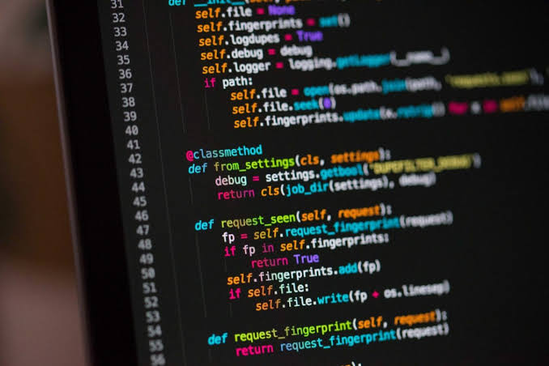
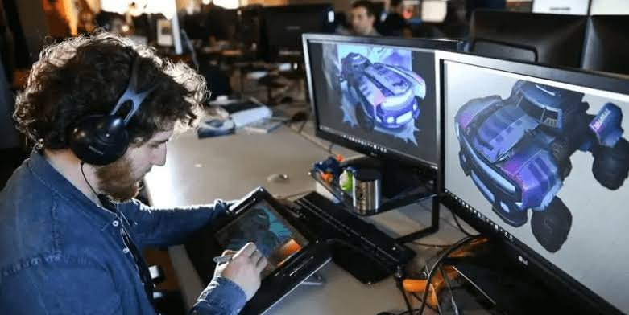
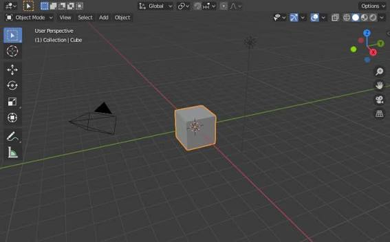
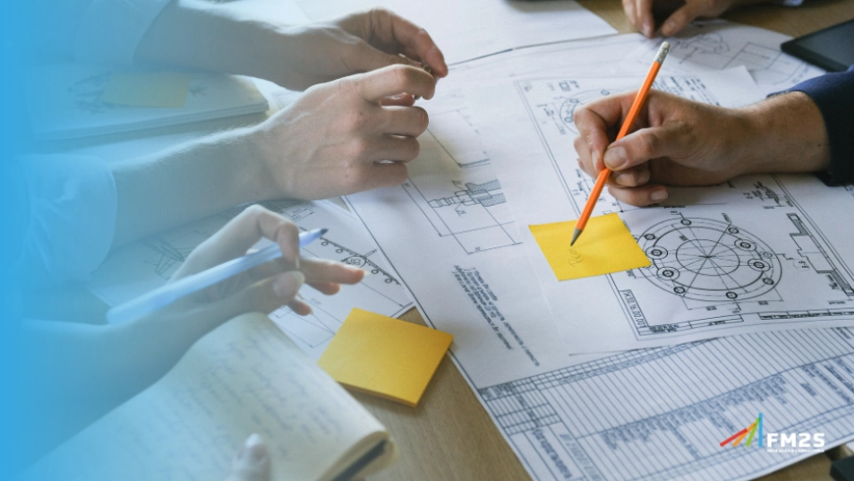

Codinome Inter 2
Um projeto em desenvolvimento que tem como foco viagens interdimensionais e psicologicas. No momento é somente um texto, mas pretendo transforma-lo num jogo depois de determinado ponto
Aqui você poderá dar uma olhada em projetos que podem estar a caminho, claro nem todos vão sair com 100% de certeza, mas certamente adoraria que saisse o quanto antes!
Um projeto em desenvolvimento que tem como foco viagens interdimensionais e psicologicas. No momento é somente um texto, mas pretendo transforma-lo num jogo depois de determinado ponto

A medida que eu avanço no curso, eu almejo conseguir entrar num estagio e começar a exercer a minha profissão. No momento a area que estou mais adepto é front-end e jogos, mas estou sujeito a mudanças

Meio intrelaçado com o codinome Inter 2, mas antes gostaria de criar um jogo simples para praticar e entender melhor como funciona.

Quero, futuramente, começar a exportar modelos e parar de ficar dependendo de terceiros pra gerar meus renders. A ideia é aumentar minha independencia e criatividade.

Por ultimo mas de longe o menos importante, quero finalizar projetos já estabelecidos. Seja o Versus 5, a universidade ou qualquer outro projeto, o que importa é terminar pra não acumular!